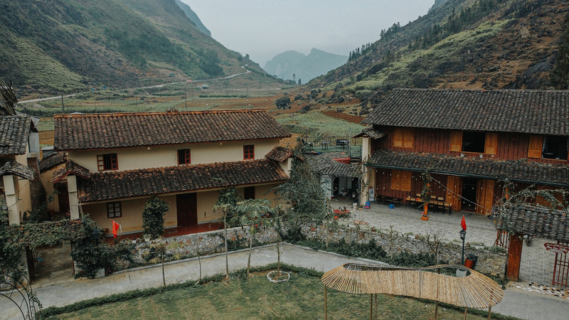
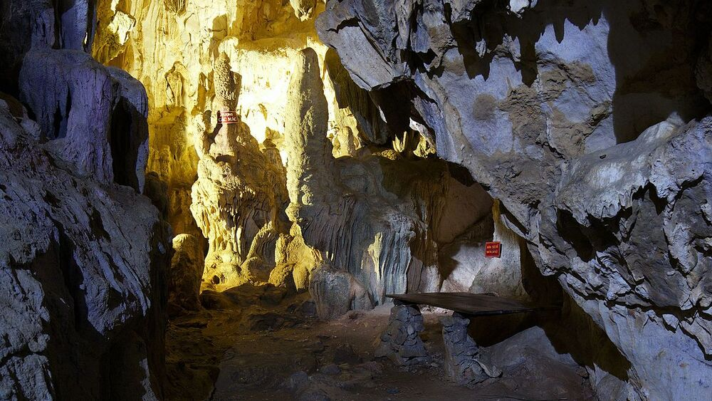
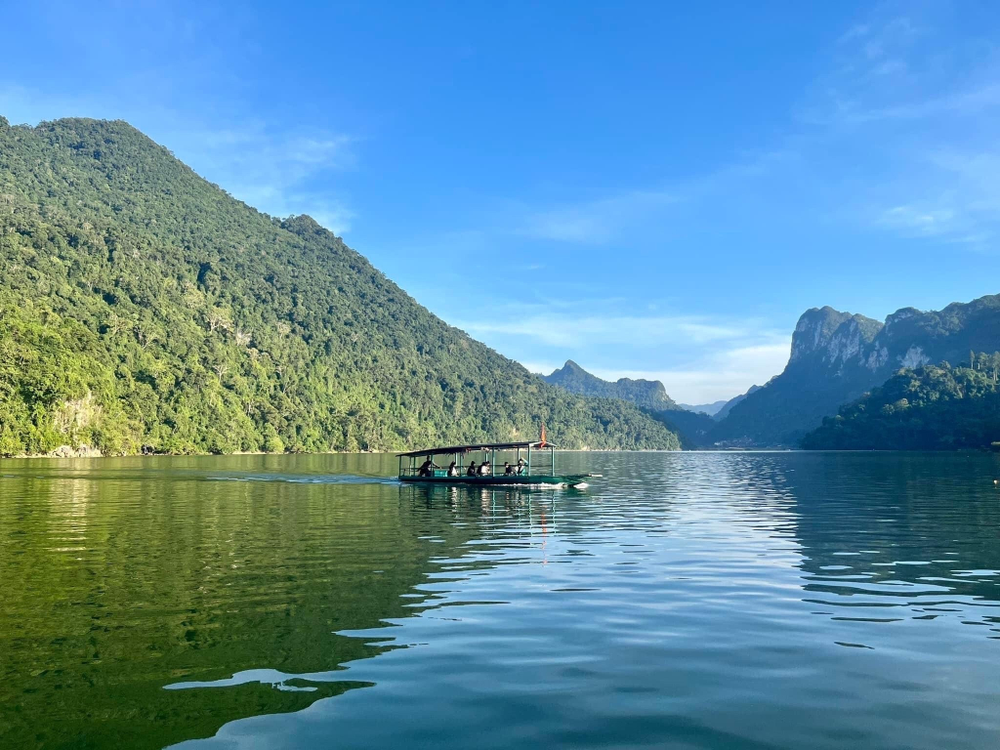

TOUR HÀ GIANG – CAO BẰNG – BẮC KẠN 5N4Đ




Tổng quan Hà Giang Cao Bằng Bắc Kạn
Hành trình rẽ lối đưa bước chân lữ khách tìm về miền non nước kỳ vĩ và mây ngàn của vùng địa đầu Tổ quốc. Bỏ lại sau lưng những ồn ào phố thị, chặng đường tuyệt đẹp này sẽ dẫn dắt bạn đi qua những cung đèo uốn lượn sương giăng, chạm tay vào những kỳ quan thiên nhiên tráng lệ và lắng nghe nhịp sống bình dị của đồng bào vùng cao. Từ những dãy núi đá tai mèo sừng sững bạt ngàn, dòng thác tuôn trào bọt trắng xóa cho đến mặt hồ tĩnh lặng soi bóng mây trời, tất cả hòa quyện thành một bản tình ca say đắm lòng người.
Đặc điểm nổi bật:
- Chinh phục Công viên địa chất toàn cầu Cao nguyên đá Đồng Văn hùng vĩ và đèo Mã Pì Lèng - đoạn đường lãng mạn mang tên “Đường Hạnh phúc”.
- Trải nghiệm dạo thuyền trên sông Nho Quế thơ mộng, chiêm ngưỡng Hẻm Tu Sản - nơi địa hình bị chia cắt sâu nhất Việt Nam.
- Khám phá Thác Bản Giốc tráng lệ, được mệnh danh là thác nước đẹp nhất Việt Nam và lớn thứ 4 thế giới trong các thác nằm trên đường biên giới.
- Ngược dòng lịch sử tại Khu di tích Pác Bó, dạo bước bên Suối Lê Nin trong vắt và thám hiểm hang Cốc Bó.
- Thả hồn thư thái trên mặt hồ Ba Bể bao la, len lỏi qua Ao Tiên huyền bí và đền An Mạ thiêng liêng.
- Giao lưu văn hóa, ngắm hoa tam giác mạch và check-in tại các địa danh nổi tiếng: Phố Cáo, bản Sủng Là, Dinh Vua Mèo, Cột Cờ Lũng Cú và Làng rèn Phúc Sen.
Lịch trình
NGÀY 01: HÀ NỘI – HÀ GIANG – QUẢN BẠ – YÊN MINH
Buổi Sáng:
Xe ô tô và hướng dẫn viên đón đoàn tại điểm hẹn, bắt đầu chuyến đi lên miền rẻo cao Hà Giang. Quý khách có thể tự do nghỉ ngơi và ăn sáng tại ngã 3 Kim Anh hoặc trên đường cao tốc.
Buổi Trưa:
Dừng chân dùng bữa trưa ngon miệng tại thị trấn Tân Yên thuộc Hàm Yên, Tuyên Quang.
Buổi Chiều:
Chuyến xe đưa đoàn ghé thăm Đền Đôi Cô Cầu Má linh thiêng nép mình bên bờ sông Lô, sau đó check-in ghi dấu kỷ niệm tại cột mốc Km0 khi đặt chân đến thành phố Hà Giang. Tiếp tục hành trình lên Cổng Trời Quản Bạ, quý khách thỏa sức thu vào tầm mắt toàn cảnh thị trấn Tam Sơn và lưu lại khoảnh khắc đẹp bên Núi đôi Cô Tiên quyến rũ.
Buổi Tối:
Đoàn di chuyển đến Yên Minh nhận phòng, dùng bữa tối và tự do tận hưởng không khí núi rừng êm ả về đêm.
NGÀY 02: YÊN MINH – ĐỒNG VĂN – MÈO VẠC – BẢO LẠC
Buổi Sáng:
Đón ngày mới với bữa sáng ấm áp, xe đưa đoàn vút đi chiêm ngưỡng Cao nguyên đá Đồng Văn hùng vĩ. Hành trình lần lượt dừng chân tại Phố Cáo với hàng rào đá mộc mạc, bản Sủng Là thăm ngôi nhà tường trình đất từng làm bối cảnh phim “Chuyện của Pao”, và check-in bên hoa tam giác mạch rực rỡ ngã dốc Chín Khoanh. Quý khách tiếp tục khám phá Dinh Vua Mèo quyền uy của dòng họ Vương và thiêng liêng chạm tay vào Cột Cờ Lũng Cú – nơi vĩ độ cao nhất bản đồ Việt Nam.
Buổi Trưa:
Quý khách dừng chân dùng bữa trưa tại nhà hàng.
Buổi Chiều:
Tản bộ hoài niệm tại Phố Cổ Đồng Văn, nhâm nhi ly cà phê đậm vị (chi phí tự túc). Sau đó, đoàn chinh phục 16km đèo Mã Pì Lèng ngoạn mục, ngắm nhìn vẻ đẹp tráng lệ của Hẻm Tu Sản. Quý khách có thể trải nghiệm ngồi thuyền lướt nhẹ trên dòng sông Nho Quế xanh biếc (chi phí thuyền 150.000đ/khách và xe ôm 200.000đ/khách tự túc).
Buổi Tối:
Đoàn về tới Bảo Lạc nhận phòng, ăn tối và tự do dạo chơi.
NGÀY 03: BẢO LẠC – BẢN GIỐC – NGƯỜM NGAO – CAO BẰNG
Buổi Sáng:
Làm thủ tục trả phòng, dùng điểm tâm rồi khởi hành đi Cao Bằng. Quý khách tự do lưu lại những khung hình phong cảnh tuyệt đẹp suốt chặng đường.
Buổi Trưa:
Đoàn dừng chân thưởng thức bữa trưa tại Quảng Uyên.
Buổi Chiều:
Chuyến đi đưa bạn đến với Thác Bản Giốc tuôn trào 3 tầng bọt trắng xóa, mang vẻ đẹp hùng vĩ bậc nhất Đông Nam Á. Tiếp nối là chuyến thám hiểm vẻ đẹp huyền bí của động Ngườm Ngao (động Hổ) và ghé thăm Làng rèn Phúc Sen để tìm hiểu nghề rèn dao thủ công truyền thống.
Buổi Tối:
Đoàn về đến thành phố Cao Bằng nhận phòng và dùng bữa tối. Tối đến, du khách tự do khám phá khu chợ trung tâm sầm uất và nếm thử món hạt dẻ thơm lừng.
NGÀY 04: CAO BẰNG – PÁC BÓ – BA BỂ
Buổi Sáng:
Quý khách dùng bữa sáng, trả phòng và lên xe khởi hành đi Pác Bó. Tại Khu di tích lịch sử Pắc Bó, đoàn ghé thăm nơi làm việc của Bác Hồ (1941-1945), chụp hình kỷ niệm bên Suối Lê Nin trong vắt, Núi Các Mác sừng sững và hang Cốc Bó. Tạm biệt Pác Bó, xe đưa đoàn uốn lượn qua những cung đèo ngoạn mục như đèo Tài Hồ Sìn, Cao Bắc, Khau Khang để hướng về Ba Bể.
Buổi Trưa:
Đoàn dừng chân nghỉ ngơi và dùng bữa trưa trên đèo Gió.
Buổi Chiều:
Đặt chân tới Ba Bể, quý khách nhận phòng tại homestay nhà sàn mộc mạc của người Tày ven hồ.
Buổi Tối:
Sau bữa tối ngon miệng, quý khách tự do thư giãn hoặc tham gia giao lưu lửa trại, lắng nghe những làn điệu hát Then mượt mà (chi phí tự túc).
NGÀY 05: HỒ BA BỂ – HÀ NỘI
Buổi Sáng:
Đón bình minh thanh khiết bên hồ, quý khách dùng bữa sáng tại nhà sàn, tản bộ hít thở bầu không khí trong lành trước khi trả phòng. Đoàn dạo bước ra bến, xuống thuyền nhẹ lướt trên mặt Hồ Ba Bể bao la. Hành trình vãn cảnh sẽ ghé qua Ao Tiên tĩnh mịch, viếng thăm Đền An Mạ thiêng liêng gắn với sự tích trung thần họ Mạc, và đi vòng quanh hòn Đảo Bà Góa xinh xắn giữa lòng hồ để chụp ảnh lưu niệm.
Buổi Trưa:
Quý khách dùng bữa trưa tại nhà hàng.
Buổi Chiều:
Sau bữa trưa, đoàn lên xe khởi hành về lại thủ đô. Về tới Hà Nội, hướng dẫn viên chia tay đoàn, khép lại hành trình đong đầy cảm xúc.
Dịch vụ
DỊCH VỤ BAO GỒM
- Phương tiện: Xe ô tô du lịch (từ 7 đến 29 chỗ) đời mới, máy lạnh êm ái cùng lái xe thân thiện, giàu kinh nghiệm.
- Lưu trú: 03 đêm ngủ khách sạn (02 đêm tại Yên Minh và Bảo Lạc, 01 đêm khách sạn 2 sao tại Cao Bằng) cùng 01 đêm trải nghiệm homestay bản Tày ven Hồ Ba Bể. Tiêu chuẩn sắp xếp 02 người/phòng (trường hợp lẻ ghép ngủ 3).
- Ẩm thực: Đầy đủ 09 bữa ăn chính (thực đơn 3-4 món chính, 02 món rau, cơm, canh) và 04 bữa sáng theo tiêu chuẩn chương trình.
- Vé tham quan: Trọn gói vé vào cửa các điểm có trong chương trình và thuyền vãn cảnh Hồ Ba Bể.
- Nhân sự: Hướng dẫn viên am hiểu tuyến điểm, chu đáo và nhiệt tình xuyên suốt chặng đường.
- Tiện ích: Nước suối phục vụ trên xe (01 chai 500ml/khách/ngày).
- Thuế: Đã bao gồm thuế VAT trong giá tour.
DỊCH VỤ KHÔNG BAO GỒM
- Bảo hiểm du lịch (do đặc thù đây là tour khách lẻ ghép đoàn).
- Đồ uống gọi thêm trong các bữa ăn, mini bar tại khách sạn và chi phí mua sắm cá nhân.
- Các dịch vụ phát sinh ngoài lịch trình chưa được đề cập (như vé thuyền trên sông Nho Quế 150.000đ/khách, xe ôm 200.000đ/khách, chi phí thưởng thức cà phê phố cổ, hát Then...).
Giá từ 5.550.000đ
- Mã Tour: MNHG02
- Thời gian: 5N4Đ
- Phương tiện: Xe du lịch
- Khởi hành: Hà Nội
HÀ GIANG | CAO BẰNG | BẮC KẠN
Cam kết vững vàng - Sát cánh suốt mọi hành trình
Hỗ trợ huỷ chỗ - Tối đa 24h trước khi khởi hành